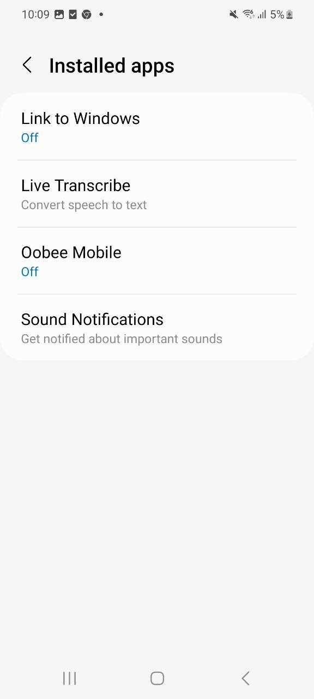
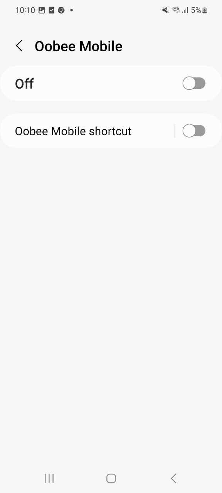
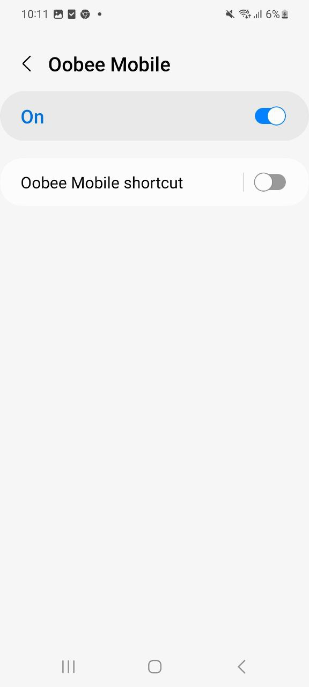

Step 1: Go to Settings > Accessibility > Installed apps
Step 2: Click on the Oobee Mobile app
 =======Step 2: Click on the Purple Mobile app
>>>>>>> masterStep 3: Enable the toggle beside “Off”
Step 4: Click “Allow” in the security prompt
Step 5: Oobee Mobile security prompt is approved
 =======Step 5: Purple Mobile security prompt is approved
>>>>>>> master